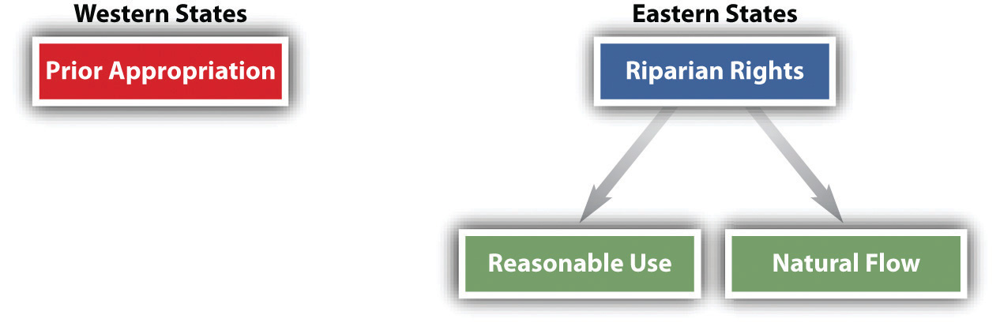

The traditional rule was stated by Lord Coke: “Whoever owns the soil owns up to the sky.” This traditional rule remains valid today, but its application can cause problems. A simple example would be a person who builds an extension to the upper story of his house so that it hangs out over the edge of his property line and thrusts into the airspace of his neighbor. That would clearly be an encroachment on the neighbor’s property. But is it trespass when an airplane—or an earth satellite—flies over your backyard? Obviously, the courts must balance the right to travel against landowners’ rights. In U.S. v. Causby,U.S. v. Causby, 328 U.S. 256 (1946). the Court determined that flights over private land may constitute a diminution in the property value if they are so low and so frequent as to be a direct and immediate interference with the enjoyment and use of land.
Lord Coke’s dictum applies to the depths as well as the sky. The owner of the surface has the right to the oil, gas, and minerals below it, although this right can be severed and sold separately. Perplexing questions may arise in the case of oil and gas, which can flow under the surface. Some states say that oil and gas can be owned by the owner of the surface land; others say that they are not owned until actually extracted—although the property owner may sell the exclusive right to extract them from his land. But states with either rule recognize that oil and gas are capable of being “captured” by drilling that causes oil or gas from under another plot of land to run toward the drilled hole. Since the possibility of capture can lead to wasteful drilling practices as everyone nearby rushes to capture the precious commodities, many states have enacted statutes requiring landowners to share the resources.
The right to determine how bodies of water will be used depends on basic property rules. Two different approaches to water use in the United States—eastern and western—have developed over time (see Figure 28.2 "Water Rights"). Eastern states, where water has historically been more plentiful, have adopted the so-called riparian rights theory, which itself can take two forms. Riparian refers to land that includes a part of the bed of a waterway or that borders on a public watercourse. A riparian owner is one who owns such land. What are the rights of upstream and downstream owners of riparian land regarding use of the waters? One approach is the “natural flow” doctrine: Each riparian owner is entitled to have the river or other waterway maintained in its natural state. The upstream owner may use the river for drinking water or for washing but may not divert it to irrigate his crops or to operate his mill if doing so would materially change the amount of the flow or the quality of the water. Virtually all eastern states today are not so restrictive and rely instead on a “reasonable use” doctrine, which permits the benefit to be derived from use of the waterway to be weighed against the gravity of the harm. This approach is illustrated in Hoover v. Crane, (see Section 28.6.1 "Reasonable Use Doctrine".Hoover v. Crane, 362 Mich. 36, 106 N.W.2d 563 (1960).
Figure 28.2 Water Rights
In contrast to riparian rights doctrines, western states have adopted the prior appropriation doctrine. This rule looks not to equality of interests but to priority in time: first in time is first in right. The first person to use the water for a beneficial purpose has a right superior to latecomers. This rule applies even if the first user takes all the water for his own needs and even if other users are riparian owners. This rule developed in water-scarce states in which development depended on incentives to use rather than hoard water. Today, the prior appropriation doctrine has come under criticism because it gives incentives to those who already have the right to the water to continue to use it profligately, rather than to those who might develop more efficient means of using it.
Property owners have certain rights in the airspace above their land. They also have rights in subsurface minerals, which include oil and gas. Those property owners who have bodies of water adjacent to their land will also have certain rights to withdraw or impound water for their own use. Regarding US water law, the reasonable use doctrine in the eastern states is distinctly different from the prior appropriation doctrine in western states.